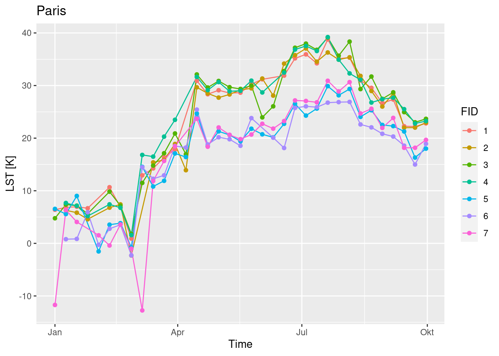
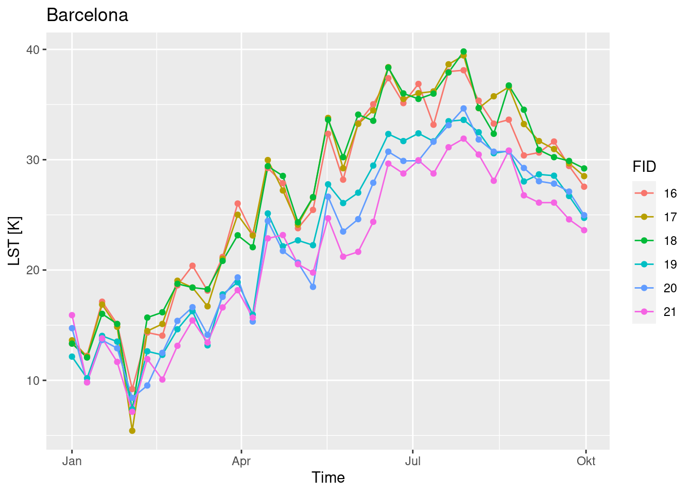
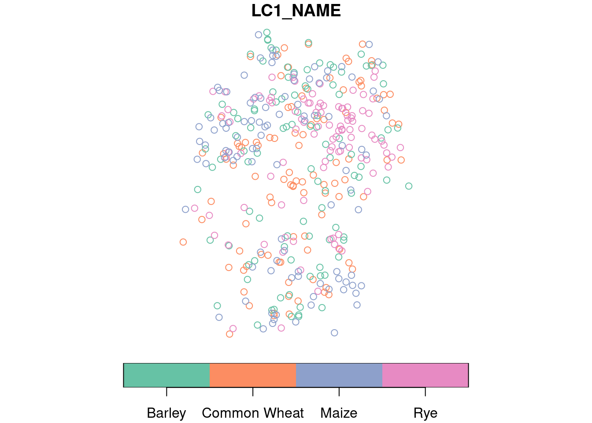
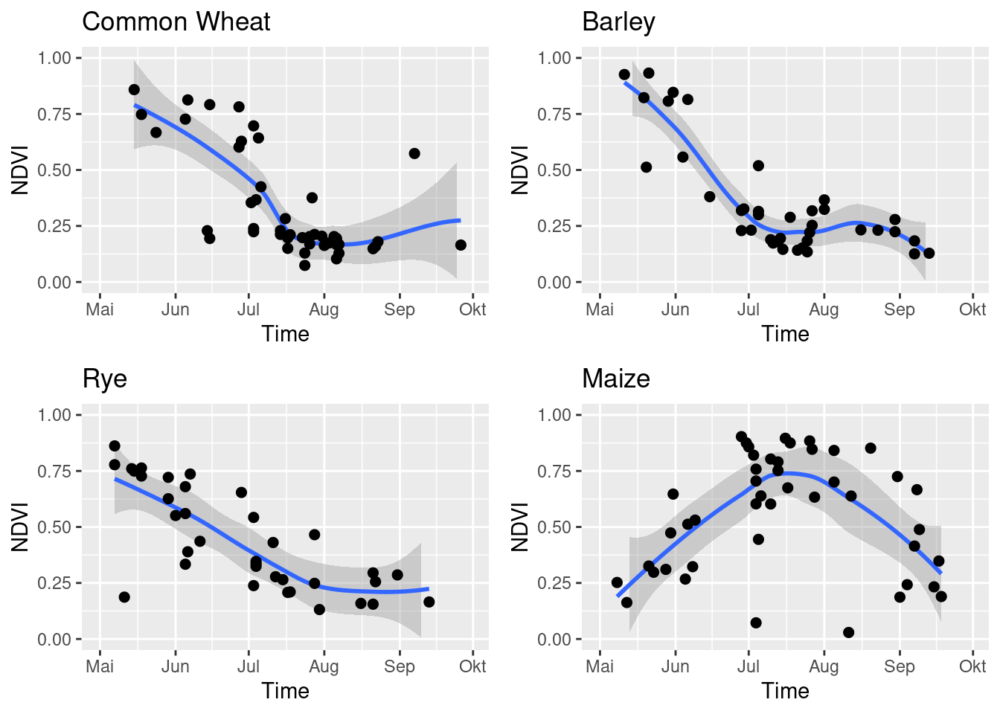

library(sf)
## Linking to GEOS 3.10.2, GDAL 3.4.1, PROJ 8.2.1; sf_use_s2() is TRUE
training_sites = read_sf("https://uni-muenster.sciebo.de/s/fgyaomOJxSd93H8/download")
plot(training_sites, axes = TRUE, key.pos = 1)3. Extracting training data for machine learning models
Machine learning models for land cover classification, change detection, spatiotemporal prediction, and similar tasks in most cases need a large number of observations for training.
This vignette will demonstrate how training data from satellite image collections can be extracted for typical tasks including:
- Classification from labeled spatial polygons
- Time series extraction from spatial points
- Combining satellite observations with in-situ observations or movement data (trajectories)
One function that can do all of this is extract_geom(), which is similar to the st_extract() function from the stars package and the extract() function from the raster and terra packages.
The extract_geom() function
Given a data cube and any simple feature geometries as an sf object, the extract_geom() function can be used as a general method to extract data cube pixel values at irregular locations. extract_geom() returns a data.frame with columns for feature identifiers (FIDs, often row numbers of the sf object), time, and bands / variables of the data cube. Each row represents the data cube values of one pixel relating to the feature given by the FID column. For anything other than simple point geometries (e.g. POLYGON, LINESTRING, MULTIPOINT, and similar), the result may contain multiple rows per feature. In these cases, it is possible to apply an aggregation function to compute mean, median or similar summary statistics over features.
extract_geom() drops any pixels with missing values only. Hence, if a feature is outside the extent of the data cube, or all pixels of a feature are NA due to clouds or unavailability of images, these pixels will not be included in the result. In contrast, if the input features contain overlapping geometries, pixels may be included several times (with different values in the FID column).
For multitemporal cubes, the full time series of pixels relating to the features is returned by default, leading to multiple rows with different time values. It is possible to specify the date/time of features using either an available time column from the sf object by name (argument time_column), or as an additional Date, POSIXt, or character vector with length corresponding to the number of features (argument datetime). In this case, only data cube pixels related to the time value of features is returned in the result instead of the full time series.
Compared to the extract() function from the raster and terra packages, extract_geom() is a little less flexible. For example, it is not possible to derive fractions of pixels covered by the features to compute weighted aggregations or similar.
1. Extracting pixel values and summary statistics from spatial polygons
As a small example how to prepare training data for simple classification tasks, we use a labeled land cover polygon dataset covering the city of Muenster, Germany, which can be downloaded from https://uni-muenster.sciebo.de/s/fgyaomOJxSd93H8/download. This GeoPackage dataset contains spatial polygons with a column class representing land cover. We can directly download and plot the features using the sf package:
This is a rather small toy dataset but since the features are polygons, they already cover quite a few 10m pixels from Sentinel-2 imagery. As a first step to extract Sentinel-2 values within the polygons, we create a (virtual) data cube from Sentinel-2 data on Amazon Web Services (see previous vignette). Since the data is openly available, we can still work locally and do not need to run a machine on AWS (though this would be much faster for larger polygon datasets).
As our area of interest, we use the extent of the polygon dataset and look for (cloud-free) observations in July, 2021. To find corresponding images, we use the rstac package and query from the Sentinel-2 cloud-optimized GeoTIFF collection on AWS.
bbox = st_bbox(training_sites)
bbox
## xmin ymin xmax ymax
## 7.576647 51.874603 7.673467 51.977592
library(rstac)
s = stac("https://earth-search.aws.element84.com/v0")
items = s |>
stac_search(collections = "sentinel-s2-l2a-cogs",
bbox = c(bbox["xmin"],bbox["ymin"],
bbox["xmax"],bbox["ymax"]),
datetime = "2021-07-01/2021-07-31") |>
post_request() |> items_fetch(progress = FALSE)
length(items$features)
## [1] 26To filter by cloud coverage and create a gdalcubes image collection object, we apply stac_image_collection() on the resulting list of 26 images.
library(gdalcubes)
s2_collection = stac_image_collection(items$features, property_filter = function(x) {x[["eo:cloud_cover"]] < 20})
s2_collection
## Image collection object, referencing 5 images with 21 bands
## Images:
## name left top bottom right
## 1 S2B_32ULC_20210723_0_L2A 6.946499 52.34304 51.34525 7.704564
## 2 S2B_32UMC_20210723_0_L2A 7.531544 52.35038 51.35444 9.143276
## 3 S2A_32ULC_20210718_0_L2A 6.952812 52.34304 51.34536 7.704564
## 4 S2A_32UMC_20210718_0_L2A 7.531544 52.35038 51.35444 9.143276
## 5 S2B_32ULC_20210703_0_L2A 6.948221 52.34304 51.34528 7.704564
## datetime srs
## 1 2021-07-23T10:36:40 EPSG:32632
## 2 2021-07-23T10:36:36 EPSG:32632
## 3 2021-07-18T10:36:41 EPSG:32632
## 4 2021-07-18T10:36:37 EPSG:32632
## 5 2021-07-03T10:36:39 EPSG:32632
##
## Bands:
## name offset scale unit nodata image_count
## 1 AOT 0 1 5
## 2 B01 0 1 5
## 3 B02 0 1 5
## 4 B03 0 1 5
## 5 B04 0 1 5
## 6 B05 0 1 5
## 7 B06 0 1 5
## 8 B07 0 1 5
## 9 B08 0 1 5
## 10 B09 0 1 5
## 11 B11 0 1 5
## 12 B12 0 1 5
## 13 B8A 0 1 5
## 14 SCL 0 1 5
## 15 WVP 0 1 5
## 16 overview:B02 0 1 5
## 17 overview:B03 0 1 5
## 18 overview:B04 0 1 5
## 19 visual:B02 0 1 5
## 20 visual:B03 0 1 5
## 21 visual:B04 0 1 5The collection contains five images only. However, we now create a rather large data cube with spatial extent from the image collection and 10m spatial resolution. Notice that this data cube is not downloaded but only created virtually, as a proxy object that knows where the corresponding images are located and what to do with the data when needed. In the example below, we use the visible RGB and the near infrared bands and add the NDVI vegetation index as a data cube band. Notice that we do not use a per-pixel cloud mask here.
v = cube_view(extent=s2_collection, dt="P1M", dx=10, dy=10, srs="EPSG:3857",
aggregation = "median", resampling = "bilinear")
raster_cube(s2_collection, v) |> # no mask
select_bands(c("B02","B03","B04","B08")) |>
apply_pixel("(B08-B04)/(B08+B04)", "NDVI", keep_bands = TRUE) -> ms_cube
ms_cube
## A data cube proxy object
##
## Dimensions:
## low high count pixel_size chunk_size
## t 2021-07-01 2021-07-31 1 P1M 1
## y 6682590.54960759 6863730.54960759 18114 10 1024
## x 773277.779989172 1017827.77998917 24455 10 1024
##
## Bands:
## name offset scale nodata unit
## 1 B02 0 1 NaN
## 2 B03 0 1 NaN
## 3 B04 0 1 NaN
## 4 B08 0 1 NaN
## 5 NDVI 0 1 NaNThe cube has 24455 x 18114 spatial pixels, which would sum to a GeoTIFF file of several gigabytes (depending on data type and compression), although the area of interest is quite small and we are only interested in a few pixels in the polygons. Fortunately, extract_geom() reduces unnecessary data reads to a large extent, meaning that even if we would use a data cube for whole Germany at 10m resolution, it would only read blocks of the data covering our area of interest, and simply ignore other parts.
x = extract_geom(ms_cube, training_sites)
nrow(x)
## [1] 12744
head(x)
## FID time B02 B03 B04 B08 NDVI
## 1 7 2021-07-01 312.3927 454.4502 300.3140 4142.701 0.8648152
## 2 7 2021-07-01 314.5155 445.5853 303.2982 4160.428 0.8641054
## 3 7 2021-07-01 320.6820 445.7498 307.1665 4165.566 0.8626493
## 4 7 2021-07-01 313.4379 459.7528 307.8308 4106.122 0.8605192
## 5 7 2021-07-01 318.1167 446.6952 311.6203 4140.536 0.8600138
## 6 7 2021-07-01 324.3806 444.3545 312.0102 4149.988 0.8601478As expected, the result contains multiple rows per polygon (because polygons cover multiple pixels). To compute summary statistics per polygon, we can provide a function as the FUN argument:
x = extract_geom(ms_cube, training_sites, FUN = median)
x
## FID time B02 B03 B04 B08 NDVI
## 1 1 2021-07-01 266.2039 389.5117 218.2514 237.6531 0.04524603
## 2 2 2021-07-01 266.8352 368.6943 223.0690 257.1879 0.07006745
## 3 3 2021-07-01 642.4923 884.2024 987.9066 2134.6692 0.36731547
## 4 4 2021-07-01 339.1859 519.5446 314.6939 4237.5824 0.86212147
## 5 5 2021-07-01 742.0260 1048.1800 1432.2655 2591.4463 0.28675374
## 6 6 2021-07-01 554.2089 829.8890 866.6759 2255.3755 0.44919218
## 7 7 2021-07-01 427.3777 596.9655 485.9907 3970.5424 0.78361568
## 8 8 2021-07-01 1181.4101 1277.0147 1335.0851 1752.2424 0.10188053
## 9 9 2021-07-01 858.2257 990.5626 1143.5540 1573.5704 0.14296265
## 10 10 2021-07-01 1361.9271 1536.8561 1653.4901 2186.0671 0.09075880
## 11 11 2021-07-01 721.8104 867.5908 1001.1942 1868.7402 0.25241746
## 12 12 2021-07-01 269.9440 405.1574 237.6765 3493.1907 0.87339904
## 13 13 2021-07-01 288.0669 424.8431 261.3002 3458.0253 0.86101114
## 14 14 2021-07-01 277.8512 412.7048 245.6007 4087.6796 0.88691074
## 15 15 2021-07-01 599.5534 821.2706 498.7003 260.6612 -0.30120940
## 16 16 2021-07-01 538.8088 758.5329 407.5442 311.8426 -0.15754052To combine the extracted data cube values with the original sf objects including the geometries, the merge() function can be used. merge() performs table join operations on common columns (e.g. IDs). We therefore first need to add an FID column to the features and then join both tables by their FID columns. Notice that by default, this is performing an inner join, i.e. rows with FIDs that only exist in one table will be dropped. Alternatively, we can set all.x=TRUE to make sure that our result contains all features from the original dataset (left outer join). Below, we combine the tables, drop the geometries and order by NDVI, showing a clear relation between class and NDVI.
x = x[order(x$NDVI,decreasing = T),]
training_sites$FID = rownames(training_sites)
trn_df = sf::st_drop_geometry(merge(training_sites, x, by = "FID"))
trn_df[order(trn_df$NDVI, decreasing = TRUE),]
## FID class time B02 B03 B04 B08
## 6 14 forest 2021-07-01 277.8512 412.7048 245.6007 4087.6796
## 4 12 forest 2021-07-01 269.9440 405.1574 237.6765 3493.1907
## 11 4 agriculture 2021-07-01 339.1859 519.5446 314.6939 4237.5824
## 5 13 forest 2021-07-01 288.0669 424.8431 261.3002 3458.0253
## 14 7 agriculture 2021-07-01 427.3777 596.9655 485.9907 3970.5424
## 13 6 agriculture 2021-07-01 554.2089 829.8890 866.6759 2255.3755
## 10 3 agriculture 2021-07-01 642.4923 884.2024 987.9066 2134.6692
## 12 5 agriculture 2021-07-01 742.0260 1048.1800 1432.2655 2591.4463
## 3 11 urban 2021-07-01 721.8104 867.5908 1001.1942 1868.7402
## 16 9 urban 2021-07-01 858.2257 990.5626 1143.5540 1573.5704
## 15 8 urban 2021-07-01 1181.4101 1277.0147 1335.0851 1752.2424
## 2 10 urban 2021-07-01 1361.9271 1536.8561 1653.4901 2186.0671
## 9 2 water 2021-07-01 266.8352 368.6943 223.0690 257.1879
## 1 1 water 2021-07-01 266.2039 389.5117 218.2514 237.6531
## 8 16 water 2021-07-01 538.8088 758.5329 407.5442 311.8426
## 7 15 water 2021-07-01 599.5534 821.2706 498.7003 260.6612
## NDVI
## 6 0.88691074
## 4 0.87339904
## 11 0.86212147
## 5 0.86101114
## 14 0.78361568
## 13 0.44919218
## 10 0.36731547
## 12 0.28675374
## 3 0.25241746
## 16 0.14296265
## 15 0.10188053
## 2 0.09075880
## 9 0.07006745
## 1 0.04524603
## 8 -0.15754052
## 7 -0.301209402. Time series extraction from spatial points
In the next example, we use MODIS land surface temperature measurements over Europe (see first vignette) and extract time series in London, Paris, and Barcelona. For each city, we define some points in the urban center as well as in the rural surrounding areas.
We start with downloading the MODIS data, if needed:
dest_dir = tempdir()
if (!dir.exists(file.path(dest_dir,"MOD11A2"))) {
options(timeout = max(1800, getOption("timeout")))
download.file("https://uni-muenster.sciebo.de/s/eP9E6OIkQbXrmsY/download", destfile=file.path(dest_dir, "MOD11A2.zip"),mode = "wb")
unzip(file.path(dest_dir, "MOD11A2.zip"), exdir = file.path(dest_dir,"MOD11A2"))
unlink(file.path(dest_dir, "MOD11A2.zip"))
}Next, we build a gdalcubes image collection object:
library(gdalcubes)
files = list.files(file.path(dest_dir,"MOD11A2"), pattern=".hdf$", full.names = TRUE)
MODIS.collection = create_image_collection(files, "MxD11A2")
MODIS.collection
## Image collection object, referencing 140 images with 8 bands
## Images:
## name left
## 1 /tmp/RtmpHgZRl9/MOD11A2/MOD11A2.A2018001.h17v03.006.2018011145329 -20.00000
## 2 /tmp/RtmpHgZRl9/MOD11A2/MOD11A2.A2018001.h17v04.006.2018011145438 -15.55724
## 3 /tmp/RtmpHgZRl9/MOD11A2/MOD11A2.A2018001.h18v03.006.2018011145428 0.00000
## 4 /tmp/RtmpHgZRl9/MOD11A2/MOD11A2.A2018001.h18v04.006.2018011145326 0.00000
## 5 /tmp/RtmpHgZRl9/MOD11A2/MOD11A2.A2018009.h17v03.006.2018018034330 -20.00000
## 6 /tmp/RtmpHgZRl9/MOD11A2/MOD11A2.A2018009.h17v04.006.2018018034246 -15.55724
## top bottom right datetime
## 1 60 50 0.00000 2018-01-01T00:00:00
## 2 50 40 0.00000 2018-01-01T00:00:00
## 3 60 50 20.00000 2018-01-01T00:00:00
## 4 50 40 15.55724 2018-01-01T00:00:00
## 5 60 50 0.00000 2018-01-09T00:00:00
## 6 50 40 0.00000 2018-01-09T00:00:00
## srs
## 1 PROJCS["unnamed",GEOGCS["Unknown datum based upon the custom spheroid",DATUM["Not specified (based on custom spheroid)",SPHEROID["Custom spheroid",6371007.181,0]],PRIMEM["Greenwich",0],UNIT["degree",0.0174532925199433,AUTHORITY["EPSG","9122"]]],PROJECTION["Sinusoidal"],PARAMETER["longitude_of_center",0],PARAMETER["false_easting",0],PARAMETER["false_northing",0],UNIT["Meter",1],AXIS["Easting",EAST],AXIS["Northing",NORTH]]
## 2 PROJCS["unnamed",GEOGCS["Unknown datum based upon the custom spheroid",DATUM["Not specified (based on custom spheroid)",SPHEROID["Custom spheroid",6371007.181,0]],PRIMEM["Greenwich",0],UNIT["degree",0.0174532925199433,AUTHORITY["EPSG","9122"]]],PROJECTION["Sinusoidal"],PARAMETER["longitude_of_center",0],PARAMETER["false_easting",0],PARAMETER["false_northing",0],UNIT["Meter",1],AXIS["Easting",EAST],AXIS["Northing",NORTH]]
## 3 PROJCS["unnamed",GEOGCS["Unknown datum based upon the custom spheroid",DATUM["Not specified (based on custom spheroid)",SPHEROID["Custom spheroid",6371007.181,0]],PRIMEM["Greenwich",0],UNIT["degree",0.0174532925199433,AUTHORITY["EPSG","9122"]]],PROJECTION["Sinusoidal"],PARAMETER["longitude_of_center",0],PARAMETER["false_easting",0],PARAMETER["false_northing",0],UNIT["Meter",1],AXIS["Easting",EAST],AXIS["Northing",NORTH]]
## 4 PROJCS["unnamed",GEOGCS["Unknown datum based upon the custom spheroid",DATUM["Not specified (based on custom spheroid)",SPHEROID["Custom spheroid",6371007.181,0]],PRIMEM["Greenwich",0],UNIT["degree",0.0174532925199433,AUTHORITY["EPSG","9122"]]],PROJECTION["Sinusoidal"],PARAMETER["longitude_of_center",0],PARAMETER["false_easting",0],PARAMETER["false_northing",0],UNIT["Meter",1],AXIS["Easting",EAST],AXIS["Northing",NORTH]]
## 5 PROJCS["unnamed",GEOGCS["Unknown datum based upon the custom spheroid",DATUM["Not specified (based on custom spheroid)",SPHEROID["Custom spheroid",6371007.181,0]],PRIMEM["Greenwich",0],UNIT["degree",0.0174532925199433,AUTHORITY["EPSG","9122"]]],PROJECTION["Sinusoidal"],PARAMETER["longitude_of_center",0],PARAMETER["false_easting",0],PARAMETER["false_northing",0],UNIT["Meter",1],AXIS["Easting",EAST],AXIS["Northing",NORTH]]
## 6 PROJCS["unnamed",GEOGCS["Unknown datum based upon the custom spheroid",DATUM["Not specified (based on custom spheroid)",SPHEROID["Custom spheroid",6371007.181,0]],PRIMEM["Greenwich",0],UNIT["degree",0.0174532925199433,AUTHORITY["EPSG","9122"]]],PROJECTION["Sinusoidal"],PARAMETER["longitude_of_center",0],PARAMETER["false_easting",0],PARAMETER["false_northing",0],UNIT["Meter",1],AXIS["Easting",EAST],AXIS["Northing",NORTH]]
## [ omitted 134 images ]
##
## Bands:
## name offset scale unit nodata image_count
## 1 DAY_VIEW_TIME 0.00 0.100 hrs 255.000000 140
## 2 EMIS_31 0.49 0.002 0.000000 140
## 3 EMIS_32 0.49 0.002 0.000000 140
## 4 LST_DAY 0.00 0.020 K 0.000000 140
## 5 LST_NIGHT 0.00 0.020 K 0.000000 140
## 6 NIGHT_VIEW_TIME 0.00 0.100 hrs 255.000000 140
## 7 QC_DAY 0.00 1.000 140
## 8 QC_NIGHT 0.00 1.000 140Now, we create some sample points from hand, where we want to extract the time series of land surface temperature measurements. We convert the created data.frame to an sf object using st_as_sf().
# create points from hand...
x = c(2.347821, 2.3062300, 2.3802715, 2.3562110, 2.473618884, 2.2717150, 1.9978976)
y = c(48.853590, 48.8422630, 48.8680197, 48.8901057, 48.670428823, 49.0335277, 48.6987311)
name = c("PARIS_URBAN_1", "PARIS_URBAN_2", "PARIS_URBAN_3", "PARIS_URBAN_4", "PARIS_RURAL_1", "PARIS_RURAL_2", "PARIS_RURAL_3")
x = c(x, -0.1004895, -0.1018785, -0.1250968, -0.0810867, 0.0490169, -0.461243207, -0.2806675, -0.3103141)
y = c(y, 51.4941646, 51.4653369, 51.5268144, 51.5109185, 51.6569130, 51.589319769, 51.2611309, 51.6595132)
name = c(name, "LONDON_URBAN_1", "LONDON_URBAN_2", "LONDON_URBAN_3","LONDON_URBAN_4", "LONDON_RURAL_1", "LONDON_RURAL_2", "LONDON_RURAL_3", "LONDON_RURAL_4")
x = c(x,2.1599154, 2.19904748, 2.2230235, 2.1670374, 2.2290286, 1.9649098)
y = c(y, 41.3879580, 41.42672217, 41.4274755, 41.4556412, 41.4823003, 41.3235823)
name = c(name, "BARCELONA_URBAN_1", "BARCELONA_URBAN_2", "BARCELONA_URBAN_3", "BARCELONA_RURAL_1", "BARCELONA_RURAL_2", "BARCELONA_RURAL_3")
pts = data.frame(x = x, y = y, name = name)
library(sf)
sf = st_as_sf(pts, coords = c("x","y"), crs = st_crs(4326))In the next step, we build a 1km 8-daily cube over Europe, convert the measurements to degree Celsius and extract the time series using the extract_geom() function.
gdalcubes_options(parallel = 8)
v = cube_view(extent=MODIS.collection, srs = "EPSG:3035", dx = 1000, dy = 1000, dt = "P8D")
raster_cube(MODIS.collection, v) |>
select_bands(c("LST_DAY")) |>
apply_pixel("LST_DAY * 0.02 - 273.15", "LST") |>
extract_geom(sf) -> result
head(result, n = 40)
## FID time LST
## 1 16 2018-01-09 12.23
## 2 17 2018-01-09 12.15
## 3 18 2018-01-09 12.07
## 4 19 2018-01-09 10.19
## 5 20 2018-01-09 9.83
## 6 21 2018-01-09 9.81
## 7 1 2018-01-01 6.39
## 8 3 2018-01-01 4.77
## 9 5 2018-01-01 6.55
## 10 7 2018-01-01 -11.71
## 11 16 2018-01-25 15.11
## 12 17 2018-01-25 14.85
## 13 18 2018-01-25 15.11
## 14 19 2018-01-25 13.51
## 15 20 2018-01-25 12.91
## 16 21 2018-01-25 11.67
## 17 16 2018-01-01 13.33
## 18 17 2018-01-01 13.63
## 19 18 2018-01-01 13.33
## 20 19 2018-01-01 12.15
## 21 20 2018-01-01 14.73
## 22 21 2018-01-01 15.91
## 23 16 2018-01-17 17.13
## 24 17 2018-01-17 16.87
## 25 18 2018-01-17 16.03
## 26 19 2018-01-17 14.03
## 27 20 2018-01-17 13.65
## 28 21 2018-01-17 13.81
## 29 16 2018-02-10 14.33
## 30 17 2018-02-10 14.47
## 31 18 2018-02-10 15.69
## 32 19 2018-02-10 12.63
## 33 20 2018-02-10 9.53
## 34 21 2018-02-10 11.93
## 35 8 2018-01-09 5.61
## 36 9 2018-01-09 1.67
## 37 10 2018-01-09 6.87
## 38 11 2018-01-09 5.53
## 39 12 2018-01-09 5.03
## 40 13 2018-01-09 3.85The result contains FID, time, and LST as columns and we can combine the data with the original sf object with merge():
We can plot the time series as in the example below, showing some differences between the rural and the urban locations for Paris and Barcelona.
library(ggplot2)
df |>
dplyr::filter(startsWith(name, "PARIS")) |>
ggplot( aes(x = as.Date(time), y = LST, color = FID, group = FID)) +
geom_line() + geom_point() + ggtitle("Paris") + xlab("Time") + ylab("LST [K]")
df |>
dplyr::filter(startsWith(name, "BARCELONA")) |>
ggplot( aes(x = as.Date(time), y = LST, color = FID, group = FID)) +
geom_line() + geom_point() + ggtitle("Barcelona") + xlab("Time") + ylab("LST [K]")
A similar workflow can e.g. be used to create patterns for time series classification using the dtwSat package.
3. Combining satellite observations with in-situ observations
The previous examples have used spatial features without time information. For applications where interest lies in the combination of satellite-based and in-situ observations or adding satellite observations to movement data such as animal tracks, time information is available for the spatial features (mostly points) and should be considered in the analysis. In this example, we will use primary data from the European Land Use and Coverage Area frame Survey (LUCAS) containing land cover point samples from 2018. The data can be downloaded as country-wise CSV files (see here). We will use observations over Germany, subset some specific crop types and combine the points with Sentinel-2 NDVI observations.
As a first step, we load the data, remove rows with missing coordinates and convert the data.frame to an sf object.
Afterwards we extract the observation date from points and add it as a new column t.
The dominant land cover type is encoded in the LC1 column, where a letter indicates the major class (e.g., forest, agriculture, water, or urban) that is followed by a number to identify more specific types (e.g. wheat, barley, oat, and others for class agriculture). Here, we are interested in four different crop types (common wheat, barley, rye, and maize). Below, we select corresponding points and randomly sample 100 points for each type and add common names to the relevant land cover types.
x[startsWith(x$LC1, c("B11", "B13", "B14", "B16")), c("LC1","t")] |>
dplyr::group_by(LC1) |>
dplyr::slice_sample(n = 100) -> training
names = c("B11" = "Common Wheat",
"B13" = "Barley",
"B14" = "Rye",
"B16" = "Maize")
training$LC1_NAME = names[training$LC1]
table(training$LC1_NAME)
##
## Barley Common Wheat Maize Rye
## 100 100 100 100
plot(training[,"LC1_NAME"], key.pos = 1)
The result contains 400 samples with observations at different dates. To add NDVI measurements to the data, we now request available Sentinel-2 images from the Sentinel-2 cloud-optimized GeoTIFF collection on AWS within the area and time of interest using rstac.
bbox = st_bbox(training)
bbox
## xmin ymin xmax ymax
## 6.219421 47.673906 14.878689 54.731253
library(rstac)
s = stac("https://earth-search.aws.element84.com/v0")
items = s |>
stac_search(collections = "sentinel-s2-l2a-cogs",
bbox = c(bbox["xmin"],bbox["ymin"],
bbox["xmax"],bbox["ymax"]),
datetime = "2018-05-01/2018-09-30") |>
post_request() |> items_fetch(progress = FALSE)The result contains 5253 images. Next, we load the gdalcubes package, create an image collection object from the STAC result and at the same time filter images by cloud cover.
The collection contains 2387 remaining images with less than 10% cloud cover. Now we create a data cube at original 10m spatial resolution and use the revisit time (5 days) as temporal resolution. We also derive NDVI measurements and drop unneeded bands on-the-fly.
v = cube_view(extent=s2_collection, dt="P5D", dx=10, dy=10, srs="EPSG:3857",
aggregation = "median", resampling = "nearest")
raster_cube(s2_collection, v, chunking = c(1,512,512)) |>
select_bands(c("B04","B08")) |>
apply_pixel("(B08-B04)/(B08+B04)", "NDVI") -> cube
cube
## A data cube proxy object
##
## Dimensions:
## low high count pixel_size chunk_size
## t 2018-05-03 2018-10-04 31 P5D 1
## y 5908460.4569991 7370990.4569991 146253 10 512
## x 503996.201529035 1686796.20152904 118280 10 512
##
## Bands:
## name offset scale nodata unit
## 1 NDVI 0 1 NaNNotice that the selection of resolution here has some important implications:
Spatially larger pixels increase the likelihood that the pixel corresponding with a point contains different land cover classes, a moderate increasement, however, may still be helpful to include a bit of spatial context and reduce noise.
Using a lower temporal resolution (e.g. in a monthly aggregated cube) reduces the amount of missing data (e.g. due to clouds) but of course decreases the time accuracy of measurements.
To extract the samples from the cube, we call extract_geom(), provide the training data and the name of the time column. Please notice that we use quite a few parallel worker instances (even more than the number of cores of the machine) to make downloading the data a little faster. Although the extraction will only need to download smaller patches of images that intersect (in space and time) with the points, it is still the most time consuming part of the extraction when working locally (not on AWS, where the data is stored). As a result, the extraction might take a few minutes on your local machine.
Once available, notice that the number of results is smaller than the number of selected sample points simply because for some points there was no (cloud-free) image available. We can now merge the results with the point features and plot the NDVI by time for the different crop types.
sf = training
sf$FID = rownames(sf)
df = merge(sf, cubex, by = "FID")
library(ggplot2)
library(cowplot)
p = lapply(names, function(x) {
df |>
dplyr::filter(LC1_NAME == x) |>
ggplot( aes(x = as.Date(t), y = NDVI)) +
geom_smooth(method = "loess") +
geom_point(size = 2) +
ylim(c(0,1)) + xlim(c(as.Date("2018-05-01"),as.Date("2018-09-30"))) +
xlab("Time") + ylab("NDVI") + ggtitle(x)
})
plot_grid(plotlist = p)
## `geom_smooth()` using formula = 'y ~ x'
## `geom_smooth()` using formula = 'y ~ x'
## `geom_smooth()` using formula = 'y ~ x'
## `geom_smooth()` using formula = 'y ~ x'
Further options to extract data
Notice that extraction with extract_geom() is not the only possible way to extract pixels or time series from data cubes. For smaller amounts of samples, extraction can be performed entirely using the available operations crop(), slice_time(), slice_space(), or the general selection operator [. For example, extraction of a few spatiotetemporal points on the LUCAS data (see last example) can also achieved by iterating over all samples and extracting a single point using cube[x$geometry, x$t].
There are of course other applications that require a different preparation of training data. As an example, gdalcubes can also be used for the creation of spatial (or even spatiotemporal) blocks in order to apply convolutional neural networks for object detection, or segmentation tasks.